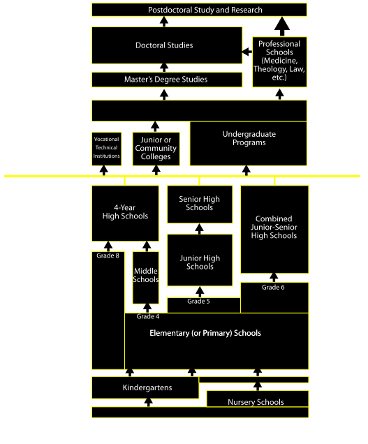

Grading Scale
In schools in the United States children are assessed throughout the school year by their teachers, and report cards are issued to parents at varying intervals. Generally the scores for individual assignments and tests are recorded for each student in a grade book, along with the maximum number of points for each assignment. End-of-term or -year evaluations are most frequently given in the form of a letter grade on an A-F scale, whereby A is the best possible grade and F is a failing grade (most schools do not include the letter E in the assessment scale), or a numeric percentage. The Waldorf schools, most democratic schools, and some other private schools, give (often extensive) verbal characterizations of student progress rather than letter or number grades. Some school districts allow flexibility in grading scales at the Student information system level, allowing custom letters or symbols to be used (though transcripts must use traditional A-F letters)
(Source: Education in the United States)
(Related: Grading Systems - SCHOOL, HIGHER EDUCATION)